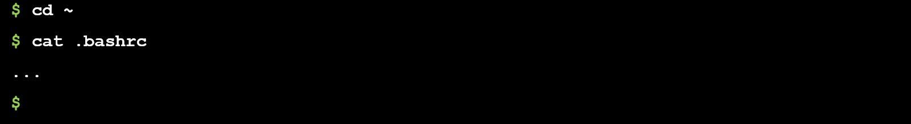
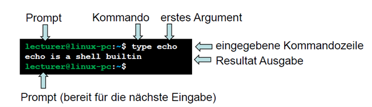

11 - Erste Schritte mit der Bash Shell¶
1. Übersicht¶
Die Shell ist eine Schnittstelle zum Kernel die es erlaubt durch Texteingaben Kernel Funktionalität auszuführen. Man nennt diese Art von Schnittstelle Kommandointerpreter.
Beispiel: man kann mittels der Shell in ein Filesystem Directory navigieren (cd) und den Inhalt von Files ausgegeben (cat).

Alternativ zur Shell gibt es graphische Oberflächen mit denen Ähnliches erreicht werden kann. Die graphische Oberfläche ist generell intuitiver zu bedienen, hingegen sind die Möglichkeiten eingeschränkter als mit der Shell.
Z.B. wird durch Doppel-Klick auf ein spezifisches Directory Objekt in das entsprechende Directory gewechselt, analog zum Shell Kommando cd.

Als weitere Alternative werden wir im Laufe des SNP Kurses lernen mittels der System-Library Kernel Funktionalität aus C Programmen heraus auszuführen.
In diesem Praktikum konzentrieren wir uns vorerst auf den Kommandointerpreter.
2. Lernziele¶
In diesem Praktikum möchten wir Sie mit der Shell Programmierung unter Linux vertraut machen.
Sie verstehen wie Kommandos aufgerufen werden und was der Exit Status ist.
Sie können Ketten von Kommandos via Pipe und logische Verknüpfungen verbinden.
Sie können Input und Output handhaben.
Sie wissen was Shell Variablen sind.
Sie verstehen einfache
ifundforKontrollstrukturen.Sie können einfache Shell Scripts verstehen und debuggen.
Sie können Scripts selber schreiben.
Sie können Hilfe via
manbzw.helpKommando erfragen.
Die Bewertung dieses Praktikums ist am Ende angegeben.
Die Code Beispiele liegen im git Repository snp-lab-code.
Die in diesem Praktikum verwendeten Kommandos werden hier z.T. erklärt.
Weitere Informationen darüber können in der Einführungsvorlesung nachgelesen werden. Eine Liste von nützlichen Kommandos finden Sie in der Installationsanleitung für die Praktika. Im Anhang finden Sie Kopien der obigen beiden Referenzen.
3. Getting Started¶
Dieser Abschnitt erstreckt sich über ca. 11 Seiten und ist als Einführung und Voraussetzung/Theorie für die Aufgaben gedacht. Im Anhang stehen noch weitere Unterlagen als Referenz zur Verfügung.
Sie können diesen Abschnitt von oben nach unten durcharbeiten und sind dann bereit für die Lösung der Aufgaben.
Wenn Sie schon Vorwissen mitbringen, können Sie auch nur die hervorgehobenen Zusammenfassungen pro Unterabschnitt durchmachen um zu entscheiden, ob Sie doch den einen oder anderen Unterabschnitt im Detail behandeln wollen.
3.1 Die Bash Shell¶
Es gibt auf Linux Systemen verschiedene Kommandointerpreter. Wir behandeln in diesem Praktikum den Kommandointerpreter mit Namen Bash.
Die Bash Shell ist ein mächtiges Werkzeug welches viele verschiedene Aspekte abdeckt von denen hier die Grundzüge behandelt werden. Weitergehende Information können in der Shell selber mittels help Kommando (für Bash Hilfe) oder man (für beliebige Themen) erfragt wer-den. Natürlich gibt es zur Vertiefung auch jede Menge von Online Tutorials und Referenzen welche Sie selbständig auskundschaften können.
3.2 Kommando Eingabe¶
Die Shell bietet einen Prompt wo man eine Kommando Text Zeile eingeben kann.

Diese Zeile wird von der Shell in Häppchen (Tokens) aufgeteilt. Tokens sind Operatoren und Worte welche durch Leerzeichen oder gegebenenfalls durch Operatoren abgegrenzt sind. Der Begriff Wort ist also sehr weit gefasst. So ergibt Z.B. aus der Sicht der Shell die folgende Eingabe fünf Tokens:
echo Erste Schritte>out.txt
Token Nr |
Wert |
Typ |
Trennung |
|---|---|---|---|
1 |
echo |
Wort |
Trennung hier durch Leerzeichen |
2 |
Erste |
Wort |
Trennung hier durch Leerzeichen |
3 |
Schritte |
Wort |
Trennung hier durch Operator |
4 |
> |
Operator |
der Operator ist in sich abgeschlossen, wenn erkannt |
5 |
out.txt |
Wort |
Trennung hier durch das Ende der Zeile |
Gewisse Worte plus die Operatoren haben für die Shell eine reservierte Bedeutung. Will man diese reservierte Bedeutung umgehen, bzw. gewissen Text wortwörtlich (inklusive alle Leerzeichen, etc.) behandeln, so kann man solchen Text mit Anführungsstrichen (Quoting genannt) umschliessen. (Auf die verschiedenen Varianten von Quoting gehen wir später ein.)
Z.B. wird die reservierte Bedeutung von > in folgender Eingabe aufgehoben:
echo "Die Bedeutung von > ist, die Ausgabe in ein File zu schreiben"
Zusammenfassung: Kommando Eingabe |
|---|
- die Shell liest eine Zeile Text |
- der gelesene Text wird in Tokens (Worte und Operatoren) aufgeteilt |
- Quoting erlaubt es, die reservierte Bedeutung von Worten und Operatoren aufzuheben |
3.3 Kommando Ausführung¶
Wenn die eingegebene Zeile in Tokens aufgeteilt ist, teilt die Shell die Tokens in Kommando Aufrufe auf, welche durch Operatoren oder das Ende der Zeile terminiert sind.
Z.B. echo Hallo > out.txt ; wc -l out.txt
Diese Kommandozeile besteht aus zwei Kommando Aufrufen (echo… und wc…) getrennt durch den Strich-Punkt Operator.
Übrigens: wc ist «word-count» und gibt mit dem Argument -l die Anzahl Zeilen (lines) aus.
Das auszuführende Kommando findet die Shell indem das erste Wort interpretiert wird:
Ist das Wort ein Kommando das die Shell selber ausführen kann (built-in oder user-definierte Funktion), z.B.
echo?Ist das Wort ein File Path? Wenn ja, führt die Shell das entsprechende Programm aus, z.B.
/usr/bin/wc.Sonst durchsucht die Shell die Directory Pfade aus der Variable PATH. Das erste Pro-gramm das in einem der Directories gefunden wird, wird ausgeführt, z.B.
wc.
Mit dem Shell built-in Kommando type mit Argument -a, gefolgt von den Kommandos die er-fragt werden sollen, kann geprüft werden über welche der obigen Stufen ein Kommando von der Shell gefunden wird.
Z.B. type -a echo wc type for if

Zusammenfassung: Kommando Eingabe |
|---|
die Token Sequenz einer Kommandozeile wird in Kommando Aufrufe aufgeteilt |
das erste Wort pro Kommandoaufruf wird dreistufig gesucht |
1. Ist es ein built-in oder eine user-function? |
2. Ist es explizit durch einen File Pfad gegeben? |
3. Wird es in einem Directory, gegeben durch die PATH Variable, gefunden? |
3.4 Exit Code¶
Jedes Kommando gibt einen Exit Code an die Shell zurück. Dieser Exit Code gibt Auskunft über den Erfolg (gleich 0) oder Misserfolg (ungleich 0) der Kommandoausführung.
Der Exit Code des unmittelbar vorher ausgeführten Kommandos kann mittels $? abgefragt werden. Z.B. wc -l xxx.txt ; echo "Error: $?" gibt folgendes aus:
Man kann die Ausführung eines Folgekommandos vom Erfolg des Vorgängerkommandos abhängig machen. Dazu gibt es drei Operatoren und zwei Built-in Kommandos:
Operator |
Bedeutung |
Beispiele |
|---|---|---|
cmd1 |
Logisches «Und»: cmd2 wird nur ausgeführt, wenn cmd1 erfolgreich war |
|
|
||
cmd1 |
Logisches «Oder» |
|
|
||
|
Invertierung des Exit Codes: |
|
|
||
|
Kommando welches den Exit Code 0 zurückgibt |
|
|
Kommando welches den Exit Code 1 zurückgibt |
|
Die obige Tabelle zeigt, dass in der Shell der Exit Code 0 als logisch «true» interpretiert wird, alle übrigen Exit Codes als «false».
Man kann diese Logischen Operatoren und Kommandos nutzbringend wie folgt anwenden:
Fallback ausführen beim Fehlschalgen eines Kommandos
z.B.
test -d directory || mkdir directory-> hier: das Directory wird nur kreiert, wenn es nicht existiert
das Kommando
test -dist erfolgreich, wenn dasdirectoryexistiertmkdirkreiert dasdirectory
Abbrechen beim ersten fehlschlagenden Kommando in einer Kette von Kommandos
z.B.
mkdir directory && cd directory-> hier: es wird nur in das Directory gewechselt, wenn es kreiert werden konnte
cdwechselt in das gegebenedirectory
Zusammenfassung Exit Status |
|---|
- jedes ausgeführte Kommando gibt einen Exit Code zurück: 0 = Erfolg, sonst Misserfolg |
- |
- Logische Operatoren und Kommandos welche sich auf Exit Code beziehen: |
- Exit Code 0 hat die Bedeutung von |
3.5 I/O Umleitung¶
Die Shell bietet etliche Operatoren um stdin, stdout und stderr umzuleiten.
Eine Auswahl von gängigen Shell I/O Operatoren finden Sie in der Einführungsvorlesung und als Kopie davon im Anhang.
Beispiele:
Operator |
||
|---|---|---|
… |
stdin von File lesen |
|
… |
stdout in File schreiben |
|
… |
stdout auf Pipe schreiben und stdin von Pipe lesen |
|
… |
stderr auf File schreiben |
|
… |
stderr und stdout kombi-nieren |
|
… > |
Output verschlucken |
|
… < |
Leerer Input |
|
Zusammenfassung I/O Umleitung |
|
|---|---|
Die Shell kann I/O Streams umleiten |
|
von Files lesen: |
cmd |
in Files schreiben: |
cmd |
über Pipe schreiben bzw. lesen: |
cmd1 |
Error Output in File schreiben: |
cmd |
Error zusammen mit Standard Out: |
cmd |
Spezielle Files |
|
Output verschlucken: |
cmd > |
leeres File lesen: |
cmd < |
3.6 Shell Variablen¶
In der Shell können Sie Werte in Variablen speichern und wieder abfragen.
Zugriff |
Bedeutung |
Beispiel |
|---|---|---|
Setzen |
Eine Variable hat einen Namen und optional einen Wert. |
|
Gross- und Kleinschreibung ist von Bedeutung. |
||
Eine Variable hat keinen Typen, d.h. der Wert wird als Text gespeichert. |
||
Achtung: es dürfen keine Spaces vor oder nach dem Gleichheitszeichen stehen! |
Zugriff |
Bedeutung |
Beispiel |
|---|---|---|
Auslesen |
Wenn ein Wert einer Variab-len verwendet werden soll wird der Name der Variablen mit einem führenden |
|
Der Text |
|
|
Alternativ kann der Wert der Variable auch so angesprochen werden: |
||
Einen Zugriff auf eine Variable die nicht gesetzt wurde resultiert in einem leeren Wert. |
Zugriff |
Bedeutung |
Beispiel |
|---|---|---|
Zugriff |
Es gibt viele Möglichkeiten einen Wert noch zu transformieren, wenn er angewendet wird. |
|
Stellvertretend dafür folgende Anwendung: |
|
|
Beim Anwenden des Wertes alle Instanzen eines (Sub-) Textes ersetzen: |
>string ping -> strong pong |
|
|
|
|
>/home/vagrant -> -home-vagrant |
||
Anmerkung: $PWD wird von der Shell auf den Pfad auf das aktuelle Directory gesetzt. |
Zugriff |
Bedeutung |
Beispiel |
|---|---|---|
Kommando Output in Variable speichern |
Mit |
|
|
||
>270696 /home/vagrant |
||
Anmerkung: das Kommando |
Zugriff |
Bedeutung |
Beispiel |
|---|---|---|
Rechnen |
Die Shell kann ganzzahlig rechnen. Dies muss speziell angegeben werden mit |
|
> Plus 1 = 123+1 |
||
Mit |
|
|
> Plus 1 = 124 |
||
|
||
|
||
> 140 |
Zusammenfassung Shell Variablen |
||
|---|---|---|
Setzen |
var=value |
usage=“usage: cmd arg1 arg2” |
Anwenden: |
\(var oder \){var} |
wer=$USER |
Transformation: |
${name//Text/Ersatz} |
var=${PATH//: /} |
Kommando Output: |
$(Kommando) |
n=$(cat myfile.txt | wc -l) |
Rechnen: |
$((Ausdruck)) |
i=$((i+1)) |
3.7 Shell Scripts¶
Die Shell bietet die Möglichkeit, Kommandozeilen in Scripts zusammenzufassen um diese dann als Ganzes auszuführen. Dies erlaubt es, wiederkehrende Kommandoaufrufe zusammenzufassen und bei Bedarf als Ganzes auszuführen wie wenn man jede Zeile händisch eingetippt und ausgeführt hätte.
Beispiel
Angenommen ist folgender Text im File ~/disk-usage-of-home-directory.sh:
echo "Size in KB of the home directory"
du -sk ~
Resultat der Ausführung:
bash ~/disk-usage-of-home-directory.sh
> Size in KB of the home directory
> 270700 /home/vagrant
She-Bang
Um nicht jedes Mal bash … angeben zu müssen, bietet das Betriebssystem die Möglichkeit, im Script anzugeben, dass Bash als Kommandointerpreter für das gegebene Script anzuwenden ist.
Dies geschieht mit dem so genannten «she-bang». Das ist ein Kommentar von spezieller Form auf der ersten Zeile des Scripts. Diese Zeile gibt an mit welcher Kommandozeile das Script vom Betriebssystem aufgerufen werden soll.
Wir ergänzen somit das obige Script mit dem she-bang für Bash (#!/bin/bash)
#!/bin/bash
echo "Size in KB of the home directory"
du -sk ~
Damit das Script direkt, das heisst ohne bash auf der Kommandozeile anzugeben, aufgerufen werden kann muss die Erlaubnis dafür gegeben werden. Dies wird im File Modus angegeben, z.B.
chmod a+x ~/disk-usage-of-home-directory.sh
Das Kommando chmod ändert in diesem Beispiel die Attribute des Files so dass es als Kommando ausführbar ist. Da das chmod Kommando die Erlaubnis gibt ein Kommando ausführbar zu machen, kann es sein, dass Sie erhöhte Rechte benötigen um das chmod Kommando aus-zuführen. Dies geschieht mit dem Kommando sudo ...:
sudo chmod a+x ~/disk-usage-of-home-directory.sh
Dies erfragt Ihr Passwort (Ihr Login ist in dieser Umgebung Teil der Administratoren Gruppe) und führt dann das Kommando chmod mit Administrator Rechten aus.
Nun können Sie ohne bash auf der Kommandozeile das script wie folgt ausführen:
~/disk-usage-of-home-directory.sh
Script Argumente
In der Kommandozeile können Argumente einem Kommando übergeben werden.
Innerhalb eines Shell Scripts kann auf die Argumente via die Variablen ${nr} zugegriffen werden, bzw. für die Argumente 0…9 geht auch $0, $1, …$9.
$0 steht für den Kommandonamen (bzw. wie das Kommando aufgerufen wurde), $1 für das erste Argument, $2 für das zweite, etc.
Exit Code eines Scripts
Jedes Kommando, und somit auch jedes Script, geben der Shell einen Exit Code zurück.
Der Exit Code eines Scripts ist der Exit Code des zuletzt ausgeführten Kommandos innerhalb des Scripts.
Zusammenfassung Shell Scripts |
|---|
Ein Script sind eine oder mehrere Kommandozeilen in einem Text File. |
|
Damit das Script ausführbar ist muss es Ausführungsrechte erhalten ( |
Falls ein Kommando Administrator Rechte benötigt um ausgeführt werden zu können, kann das mit dem Kommando |
Script Argumente können mit den Variablen |
|
Der Exit Code eines Scripts ist der Exit Code des letzten ausgeführten Kommandos des Scripts. |
3.8 Kontrollfluss¶
Die Shell bietet Kontrollstrukturen wie Verzweigungen und Wiederholungen an.
Dies ist speziell nützlich in Scripts und weniger bei der direkten Eingabe auf der Kommandozeile da man interaktiv bei der Eingabe auf den Output der aufgerufenen Kommandos reagieren kann.
Stellvertretend für verschiedene Varianten von Kontrollstrukturen werden hier if und eine Variante von for besprochen.
Verzweigung mittels «if»
if cmd # gehe zu "then" wenn der Exit Code von cmd true ist
then
...
fi
if cmd # wie oben, aber gehe im "false" Fall nach "else"
then
...
else
...
fi
if cmd1 # wie oben, aber gehe im "false" Fall zum ersten "elif"
then
...
elif cmd2 # analog zum "if": true -> "then", "false" -> "else"/"elif"
then
...
else
...
fi
Wiederholung mittels «for»
# "name" nimmt hintereinander die gegebenen Werte an und durchläuft
# jeweils den do...done Block
for name in (Wort1 Wort2 Wort3 ... WortN)
do
...
done
# "name" nimmt hintereinander die Werte an, welche durch das
# Ausführen von "cmd" auf stdout generiert werden, separiert
# durch Leerzeichen, und durchläuft jeweils den do...done Block
for name in $(cmd)
do
...
done
# "name" nimmt hintereinander die Werte an, welche durch Splitten
# des $var Wertes produziert werden, getrennt durch Leerzeichen,
# und durchläuft jeweils den do...done Block
for name in $var
do
...
done
# wie oben, aber der die Variable (wie hier z.B. PATH) wird nicht
# an Leerstellen getrennt, sondern an Doppel-Punkten (IFS=":")
IFS=":" # input-field-separator ist der Doppel-Punkt
for name in $PATH
do
...
done
IFS= # input-field-separator zurückgesetzt auf Leerzeichen-Trennung
Zusammenfassung Kontrollfluss |
|
|---|---|
if |
wenn Exit Code = true den then-Block ausführen |
if else |
wie oben, aber falls Exit Code = false else-Block ausführen |
if elif else |
wie oben, aber anstelle des else-Blocks, den ersten elif-Block |
for in (…) |
für alle Werte in der Space-separierten (…) Liste wiederholen |
for in $(…) |
wie oben, aber die Liste aus stdout vom Kommando extrahieren |
for in $var |
wie oben, aber die Liste durch Space-splitten der Variablen |
IFS=… for in $var |
wie oben, aber Splitten am IFS Zeichen (z.B. an “:” ) |
3.9 test Kommando¶
Als nützliches Kommando für die Abfrage verschiedenster Natur gibt es das test Kommando.
Dieses wird oft in if-Kommandos benötigt um z.B. zu prüfen ob ein File existiert, etc.
Da der Aufruf des test Kommandos eine häufige Aufgabe ist, gibt es eine alternative Möglichkeit des Aufrufes:
Beispiel |
Gleichwertige Alternative |
|---|---|
|
|
|
|
|
|
Ein paar test Abfragen folgen hier. Für mehr Details darüber sind Sie an die entsprechende man page verwiesen.
Abfrage |
|
|---|---|
|
Existiert das File $path? |
|
Existiert das Directory $path? |
|
Execute Permission auf dem File oder Directory? |
|
Ist die Länge des Wertes nicht Null? |
|
Ist die Länge des Wertes Null? |
Zu beachten: die Variablen sind meistens in Quotes gegeben um damit Leerzeichen oder reservierte Worte und Operatoren in den Werten zu ermöglichen.
Zusammenfassung [ … ] bzw. test Kommando |
|---|
viele Abfragen sind über dieses Kommando durchführbar (siehe |
oft als [ … ] vorzufinden, aber identisch mit |
4. Aufgabe 1: Lesen und Verstehen von Shell Scripts¶
4.1 Was ist der Output¶
Gehen Sie in der Bash Shell im git Repository snp-lab-code nach P01_Bash/code.
Führen sie das Script ./get-exec-list-arg.sh aus.
$ ./get-exec-list-arg.sh $PWD
4.2 Trace Output¶
Lassen Sie die Shell ausgeben, was für Kommandos sie gerade ausführt.
Was sehen sie?
$ bash -x get-exec-list-arg.sh $PWD
4.3 Experimentieren¶
Lesen Sie die obersten Kommentare (#…) im Script und experimentieren Sie mit entsprechen-den Aufrufen.
4.4 Erklären Sie das Script¶
Stellen Sie das Script auf der Shell mittels nl («number lines») dar.
$ nl -ba get-exec-list-arg.sh
Als Resultat sollten Sie in etwa folgenden Output bekommen
1 #!/bin/bash
2
3 # produces a tabular output of all executables as found over the $PATH environment variable
4 # - output format: [1-based index of $PATH entry]:[$PATH entry]:[name of the executable]
5 # - e.g. 6:/bin:bash
6 # - the first argument (if given) is used as alternative to $PATH (e.g. for testing purpos-es)
7 # usage: ./get-exec-list-arg.sh # examines $PATH
8 # usage: ./get-exec-list-arg.sh "$PATH" # equivalent to the above call
9 # usage: ./get-exec-list-arg.sh ".:~/bin" # examines the current directory (.) and ~/bin
10
11 # argument handling
12 path="$1"
13 [ -n "$path" ] || path="$PATH"
14
15 # input-field-separator: tells the shell to split in the 'for' loop the $var by ":"
16 IFS=":"
17
18 for p in $path
19 do
20 i=$((i+1))
21 [ -n "$p" ] || p="."
22 if [ -d "$p" ] && [ -x "$p" ]
23 then
24 find -L "$p" -maxdepth 1 -type f -executable -printf "$i:%h:%f\n" 2>/dev/null
25 fi
26 done
Was machen folgende Zeilen?
path="$1" # Was ist der Wert von path, wenn kein Argument übergeben wird?
[ -n "$path" ] || path="$PATH" # Wann wird das zweite Kommando ausgeführt?
for p in $path # Wie oft wird der Loop ausgeführt mit path=a:b:c
i=$((i+1)) # Weshalb nicht einfach i=i+1?
[ -n "$p" ] || p="." # Wenn p=abc, was ist der Wert von p nach dieser Zeile?
if [ -d "$p" ] && [ -x "$p" ] # Wann ist die Bedingung wahr?
find -L "$p" -maxdepth 1 -type f -executable -printf "$i:%h:%f\n" 2>/dev/null
# find traversier hier alle Files ohne in die Tiefe zu gehen
# Was bedeutet der printf Format String?
# Was bedeutet 2>/dev/null?
5. Aufgabe 2: Pipe Anwenden¶
5.1 Formatierung von Output¶
Das Script get-exec-list-arg.sh generiert Daten wie wir gesehen haben. Das Script tab2html.sh formatiert den Output von get-exec-list-arg.sh in eine einfache HTML Tabelle.
Rufen Sie beide Scripts auf, verbunden durch eine Pipe, und speichern Sie das Resultat in ein out.html File. Rufen Sie schliesslich auf derselben einen Kommandozeile firefox auf mit dem out.html als Input File auf.
Geben Sie Ihre Kommandozeile hier an.
5.2 Filtern und Sortieren¶
Die Tabelle welche durch get-exec-list-arg.sh generiert wird besteht aus drei Spalten.
Mit dem cut Kommando kann man Spalten ausblenden, bzw. die übrigen selektieren (aber nicht deren Reihenfolge ändern). Finden Sie heraus was cut -d: -f1,2 für einen Effekt hat durch ausprobieren (z.B. echo "a:b:c" | cut -d: -f1,2) und durch nachschauen in man cut.
Das Kommando sort sortiert Text. Finden Sie in man sort heraus was sort -u -n bewirkt.
Rufen Sie schliesslich die drei Elemente in einer Pipe Kette auf und beobachten Sie den Output.
Geben Sie Ihre Kommandozeile hier an. Was macht dies Kette?
6. Aufgabe 3: Eigenes Script schreiben¶
Ergänzen Sie folgendes Script and den markierten (TODO) Stellen und finden Sie heraus was es macht.
Zum Debuggen des date Kommandos, führen Sie es in der Shell direkt aus.
Z.B. date '+%x '.
Erst wenn Sie mit dem Resultat zufrieden sind, schreiben Sie das Script ab und integrieren Sie obiges Format im Script.
Setzten Sie den die File Permission so dass alle Ausführungs-Erlaubnis haben:
chmod a+x your-script-name
#!/bin/bash
# TODO: please describe the purpose and usage of the script
timestamp=$(date '+%?%?%?-%?%?%?') # TODO: produce YYYYMMDD-HHMMSS format
location=${PWD////_} # get PWD value and replace all / by _
name="backup_${location}_${timestamp}" # put together the elements of the name
fullname=/tmp/$name.tgz # the full file name
tar czvf $fullname . # create an archive of the current directory
if [ $? -eq 0 ] # check outcome ...
then
echo "SUCCESS: $fullname"
else
echo "FAILED: $fullname"
fi
Was ist das Resultat der TODOs?
7. Bewertung¶
Die gegebenenfalls gestellten Theorieaufgaben und der funktionierende Programmcode müs-sen der Praktikumsbetreuung gezeigt werden. Die Lösungen müssen mündlich erklärt werden.
Aufgabe |
Kriterium |
Punkte |
|---|---|---|
1 |
Sie können die Fragen beantworten und erklären. |
2 |
2 |
Sie können die verschiedenen Pipe Anwendungen demonstrieren und erklären. |
1 |
3 |
Das Script funktioniert und erfüllt die Vorgaben. |
1 |
Version: 10.01.2022